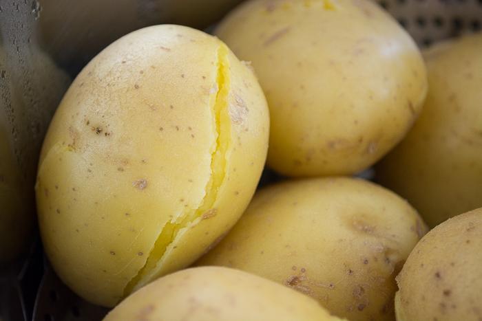

Steamed Potatoes

These are steamed potatoes. They grow out of the ground. You can eat them, for the most part.
Ingredients
Instructions
- Cut the potatoes
- Pour water into pot
- Put potatoes in water in pot
- Put the pot with the water and the potatoes inside the water on a stove
- Wait until the potatoes are steamed
- Take out the potatoes
You now have steamed potatoes, do with them as you please.
Back To Recpies